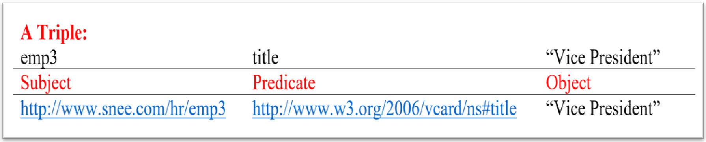
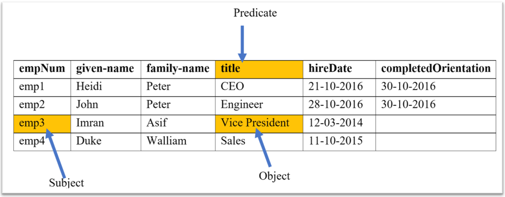
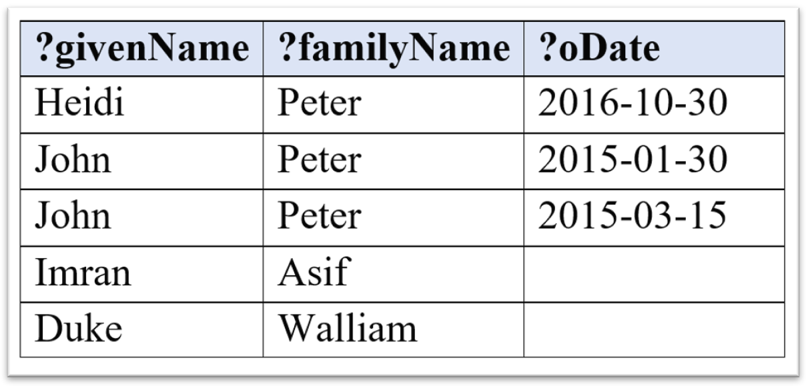

FAIR Epigraphy
SPARQL (Sparql Protocol And
RDF Query Language) is the W3C standard. The protocol part is usally
only an issue for people writing programs that pass SPARQL queries back and forth between
different machines. For most people SPARQL greatest value is as a query language for RDF –
another W3C standard. RDF describes data using a collection of three-part of one statement
such as emp3 has a title of Vice President.
We call each statement a triple and one triple consist of three parts these are Subject, Predicate and Object.
We can also say the Subject as an Entity Identifier, Predicate as an Attribute Name and Object as an Attribute Value.
The subject and predicate are actually represented using URIs to make it absolutely clear what we are talking about. URIs (Uniform Resource Identifier) kind of URLs and often look like them but they are not locators or addresses they are just identifiers. In our example, emp3 is the person who works in a specific company so we can represent this using URI like http://www.snee.com/hr/emp3 and title is also URI from the published ontology (In our case VCard business card ontology). 
The object or third part of a triple can also be a URI if you like this way that same resource can be the object of some triples and subject of the others which lets you connect up triples into networks of data called Graphs.
To make URIs simpler to write RDF popular Turtle syntax often shortens the URIs by having the abbreviated prefix stand-in for everything in the URI before the last part.
Any data can be represented as a collection of triples for example we can usually represent each entry of a table by using the Row Identifier is the Subject, Column Name is the Predicate and Value is the Object. 
@prefix vcard: <http://www.w3.org/2006/vcard/ns#> .
@prefix sn: <http://www.snee.com/hr/> .
sn:emp1 vcard:given-name "Heidi" .
sn:emp1 vcard:family-name "Peter" .
sn:emp1 vcard:title "CEO" .
sn:emp1 sn:hireDate "2016-10-21" .
sn:emp1 sn:completedOrientation "2016-10-30" .
sn:emp2 vcard:given-name "John" .
sn:emp2 vcard:family-name "Peter" .
sn:emp2 sn:hireDate "2016-10-28" .
sn:emp2 vcard:title "Engineer" .
sn:emp2 sn:completedOrientation "2015-01-30" .
sn:emp3 vcard:given-name "Imran" .
sn:emp3 vcard:family-name "Asif" .
sn:emp3 sn:hireDate "2014-12-03" .
sn:emp3 vcard:title "Vice President" .
sn:emp4 vcard:given-name "Duke" .
sn:emp4 vcard:family-name "Walliam" .
sn:emp4 vcard:title "Sales" .
sn:emp4 sn:hireDate "2015-11-10" .
This information can give us triples for every fact on the table. Some of the property names here from the vCard vocabulary. For those properties that are not available in vCard vocabulary, I made up my own property names using my own domain name. RDF makes it easy to mix and mash standard vocabularies and customizations.
Let’s say that the employee in the above table, John Peter completed his employee orientation course twice and if we want to store both of his completed course orientation values in the RDF then there is not a problem with the RDF. But if we want to stored John’s second completed orientation value in a relational database table then it would have been a lot more difficult.
sn:emp2 vcard:given-name "John" .
sn:emp2 vcard:family-name "Peter" .
sn:emp2 sn:hireDate "2016-10-28" .
sn:emp2 vcard:title "Engineer" .
sn:emp2 sn:completedOrientation "2015-01-30" .
sn:emp2 sn:completedOrientation "2015-03-15" .
let's look at a simple SPARQL query that retrieve some of the data from the above RDF Triples.
Query 1: We want a list
of all employees whose last name is Peter.
PREFIX vcard: <http://www.w3.org/2006/vcard/ns#>
SELECT ?person
WHERE
{
?person vcard:family-name "Peter" .
}We can define the prefixes in the start of SPARQL query due to the Turtle RDF syntax, that’s why you don’t have to write absolute URIs in your queries. For most SPARQL queries it’s best to look at the Where clause first because that describe which triples we want to pull from the dataset that we are querying. The Where clause does this with one or more triple patterns which are likely triples with variables as wildcards substituted into one, two or all three of each triples parts.
In the Query 1, one triple pattern will match against triples whose predicate is the family name property from the vCard vocabulary, whose object is string Peter and whose subject is anything at all. Because this triple pattern has a variable that I named person.
The Select clause indicates which variables values we want listed after the query executes. The Query 1 only has one variable so that’s the one we want to see.
When the query executes, it finds two triples that match the specified pattern from the RDF triples set and assigned these two triples to the person variable which are the subjects e.g., emp1 and emp2. The following triples show the two matches of the above query with green colour.
@prefix vcard: <http://www.w3.org/2006/vcard/ns#> .
@prefix sn: <http://www.snee.com/hr/> .
sn:emp1 vcard:given-name "Heidi" .
sn:emp1 vcard:family-name "Peter" .
sn:emp1 vcard:title "CEO" .
sn:emp1 sn:hireDate "2016-10-21" .
sn:emp1 sn:completedOrientation "2016-10-30" .
sn:emp2 vcard:given-name "John" .
sn:emp2 vcard:family-name "Peter" .
sn:emp2 sn:hireDate "2016-10-28" .
sn:emp2 vcard:title "Engineer" .
sn:emp2 sn:completedOrientation "2015-01-30" .
sn:emp2 sn:completedOrientation "2015-03-15" .
sn:emp3 vcard:given-name "Imran" .
sn:emp3 vcard:family-name "Asif" .
sn:emp3 sn:hireDate "2014-12-03" .
sn:emp3 vcard:title "Vice President" .
sn:emp4 vcard:given-name "Duke" .
sn:emp4 vcard:family-name "Walliam" .
sn:emp4 vcard:title "Sales" .
sn:emp4 sn:hireDate "2015-11-10" .
Let's executes the Query 1 and find out who are these Peters. we get
the following table as a result.
From the above results, we can see that emp1 and emp2 are just identifiers. This doesn’t
give us meaningful result.
Query 2: Now let's add a second triple
pattern in the WHERE clause that matches on the given name of the employee, who
matches the first triple pattern and stores that value in a new givenName
variable.
PREFIX vcard: <http://www.w3.org/2006/vcard/ns#>
SELECT ?person ?givenName
WHERE
{
?person vcard:family-name "Peter" .
?person vcard:given-name ?givenName .
}
The explanation of the Query 2 is that we need to adjust the SELECT Clause with the new variable givenName because now we want this in the result. The SPARQL query processor finds each triple that matches the first triple pattern and store the value in the person variable. When it looks for the second triple pattern in the WHERE clause, who have a triple that matches the first triple pattern. In easy words, SPARQL processor get all triples of family-name Peter along with given-name. So when we run the Query 2 we see given name values in the result.
Query 3: Let's retrieve the given name, family name and hire date of all the
employees.
We can do this with a WHERE Clause that has three triple
patterns one for each piece of information that we want to retrieve.
PREFIX vcard: <http://www.w3.org/2006/vcard/ns#>
PREFIX sn: <http://www.snee.com/hr/>
SELECT ?givenName ?familyName ?hireDate
WHERE
{
?person vcard:given-name ?givenName .
?person vcard:family-name ?familyName .
?person sn:hireDate ?hireDate .
}
When we run the query 3, we get the following results.
If we want to narrow down the results based on some condition, we can use a FILTER
pattern.
Query 4: Let’s say we want a list of employees who are hired
before November 1st so the FILTER pattern specifies that we only
want HD values that are less than November 1st 2015.
PREFIX vcard: <http://www.w3.org/2006/vcard/ns#>
PREFIX sn: <http://www.snee.com/hr/>
SELECT ?givenName ?familyName ?hireDate
WHERE
{
?person vcard:given-name ?givenName .
?person vcard:family-name ?familyName .
?person sn:hireDate ?hireDate .
FILTER(?hireDate < "2015-11-01")
}When we run the query 4, we get the following results in the ISO 8601 date format.
Query 5: Let’s remove the FILTER condition and list the employees and their completed orientation values instead of their hire date values.
PREFIX vcard: <http://www.w3.org/2006/vcard/ns#>
PREFIX sn: <http://www.snee.com/hr/>
SELECT ?givenName ?familyName ?oDate
WHERE
{
?person vcard:given-name ?givenName .
?person vcard:family-name ?familyName .
?person sn:completedOrientation ?oDate .
}When we run the query 5, we get the following results.
We see only Heidi and John’s orientation dates but the other employees don’t appear at all in the results why not? Let’s look more closely at the query triple patterns. The query first looks for a triple with a given name value and then a triple with the same subject as the subject that it found to match the first triple pattern but with a family name value and then another triple with the same subject and a completed orientation value. John and Heidi each have triples that match all the query triple patterns but Imran and Duke cannot match all three triple patterns. You have noted that John actually had two triples that matched the third pattern of the query, so the query had two rows of results for him, one for each completed orientation value.
Query 6: Let’s take another example, list of all employees and if they have
any their completed orientation values.
We can tell query processor that
matching on the third triple pattern is OPTIONAL.
PREFIX vcard: <http://www.w3.org/2006/vcard/ns#>
PREFIX sn: <http://www.snee.com/hr/>
SELECT ?givenName ?familyName ?oDate
WHERE
{
?person vcard:given-name ?givenName .
?person vcard:family-name ?familyName .
OPTIONAL { ?person sn:completedOrientation ?oDate . }
}This query asks for everyone with a given name and a family name and if they have a completed orientation value it will show the following result. 
Query 7: Next let’s say that Heidi is scheduling a new orientation meeting
and wants to know who to invite, in other words she wants to list all employees who do
not have a completed orientation value.
Her query asks for everyone’s given
and family names but only if for any employee who matches those first two triple patterns no
triple exists that lists a completed orientation value for that employee. We do this with
the keywords NOT EXISTS.
PREFIX vcard: <http://www.w3.org/2006/vcard/ns#>
PREFIX sn: <http://www.snee.com/hr/>
SELECT ?givenName ?familyName
WHERE
{
?person vcard:given-name ?givenName .
?person vcard:family-name ?familyName .
NOT EXISTS { ?person sn:completedOrientation ?oDate . }
}When we run the query 7, we get the following results.
So far, the only way we have seen to store a value in a variable is to include that variable in a triple pattern for the query processor to match against some part of triple. We can use the bind keyword to store whatever we like in a variable.
PREFIX vcard: <http://www.w3.org/2006/vcard/ns#>
PREFIX sn: <http://www.snee.com/hr/>
SELECT ?givenName ?familyName ?someVariable
WHERE {
?person vcard:given-name ?givenName .
?person vcard:family-name ?familyName .
BIND("some value" AS ?someVariable)
}When we run the above query, we get the following results.
This can be especially useful when the BIND expression uses values from other variables and calls some of SPARQL broad range of available functions to create a new value. In the following query the bind statement uses SPARQL’s concat function to concatenate the given name value stored by the first triple pattern a space and the family name value stored by the second triple pattern. It stores the result of this concatenation in a new variable called fullName.
PREFIX vcard: <http://www.w3.org/2006/vcard/ns#>
PREFIX sn: <http://www.snee.com/hr/>
SELECT ?givenName ?familyName ?fullName
WHERE {
?person vcard:given-name ?givenName .
?person vcard:family-name ?familyName .
BIND(concat(?givenName," ",?familyName) AS ?fullName)
}When we run the above query, we get the following results with new full name value for each employee.
All the queries we have seen so far have been SELECT queries which are like SQL SELECT statements. A Sparql construct query uses the same kind of WHERE clauses that a SELECT query can use but it can use the values stored in the variables to create the new triples.
PREFIX vcard: <http://www.w3.org/2006/vcard/ns#>
PREFIX sn: <http://www.snee.com/hr/>
CONSTRUCT {?person vcard:fn ?fullName
WHERE {
?person vcard:given-name ?givenName .
?person vcard:family-name ?familyName .
BIND(concat(?givenName," ",?familyName) AS ?fullName)
}When we run the above query, we get the following new triples.
Note that how the triple pattern showing the triple to construct is inside of curly braces. These curly braces can enclose multiple triple patterns which is a common practice when for example a construct query takes data conforming to one modal and creates triples conforming to another. The construction queries are great for data integration projects.
PREFIX vcard: <http://www.w3.org/2006/vcard/ns#>
PREFIX sn: <http://www.snee.com/hr/>
PREFIX foaf: <http://xmlns.com/foaf/0.1/>
PREFIX rdf: <http://www.w3.org/1999/02/22-rdf-syntax-ns#>
CONSTRUCT {
?person rdf:type foaf:Person .
?person foaf:givenName ?givenName .
?person foaf:familyName ?familyName .
?person foaf:name ?fullName .
}
WHERE {
?person vcard:given-name ?givenName .
?person vcard:family-name ?familyName .
BIND(concat(?givenName," ",?familyName) AS ?fullName)
}When we run the above query, we get the following new triples.
@prefix vcard: <http://www.w3.org/2006/vcard/ns#> .
@prefix sn: <http://www.snee.com/hr/> .
@prefix foaf: <http://xmlns.com/foaf/0.1/>
@prefix rdf: <http://www.w3.org/1999/02/22-rdf-syntax-ns#>
sn:emp1 rdf:type foaf:Person .
sn:emp1 foaf:familyName "Peter" .
sn:emp1 foaf:givenName "Heidi"
sn:emp1 foaf:name "Heidi Peter"
sn:emp2 rdf:type foaf:Person .
sn:emp2 foaf:familyName "Peter" .
sn:emp2 foaf:givenName "John"
sn:emp2 foaf:name "John Peter"
sn:emp2 rdf:type foaf:Person .
sn:emp2 foaf:familyName "Asif" .
sn:emp2 foaf:givenName "Imran"
sn:emp2 foaf:name "Imran Asif"
sn:emp2 rdf:type foaf:Person .
sn:emp2 foaf:familyName "Walliam" .
sn:emp2 foaf:givenName "Duke"
sn:emp2 foaf:name "Duke Walliam"
DuCharme, B., 2013. Learning SPARQL: querying and updating with SPARQL 1.1. " O'Reilly Media, Inc.".